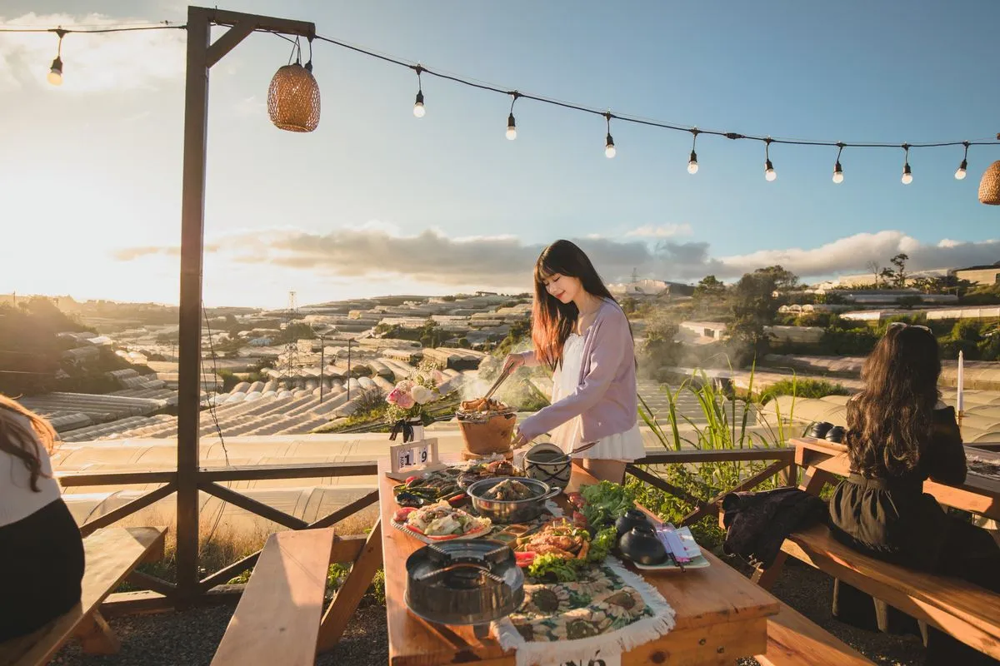
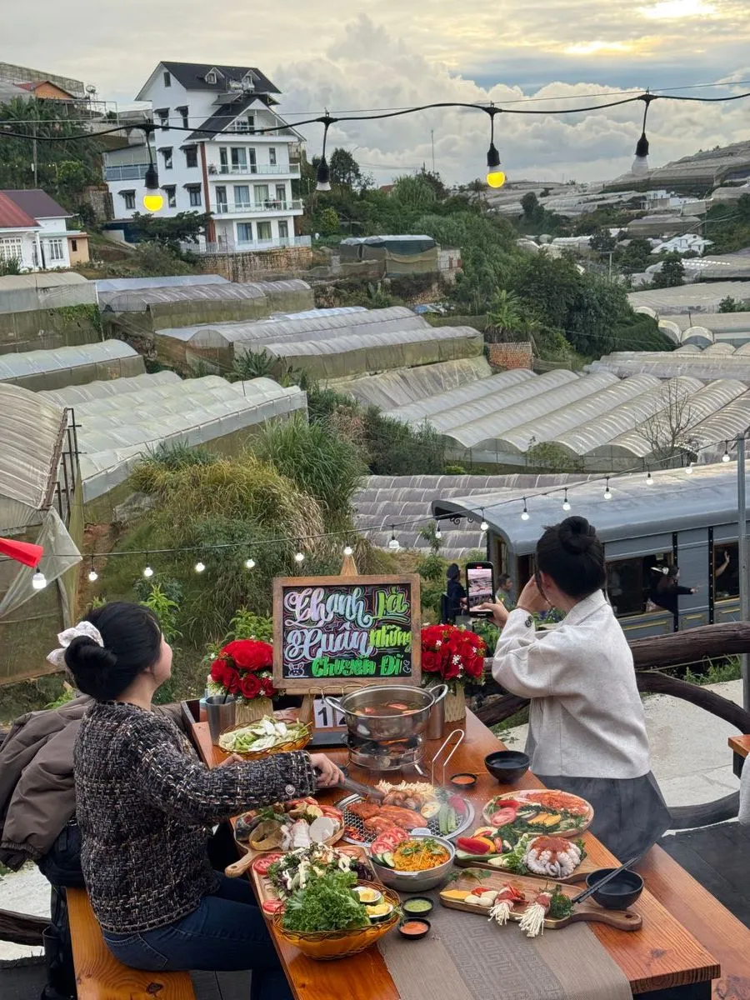
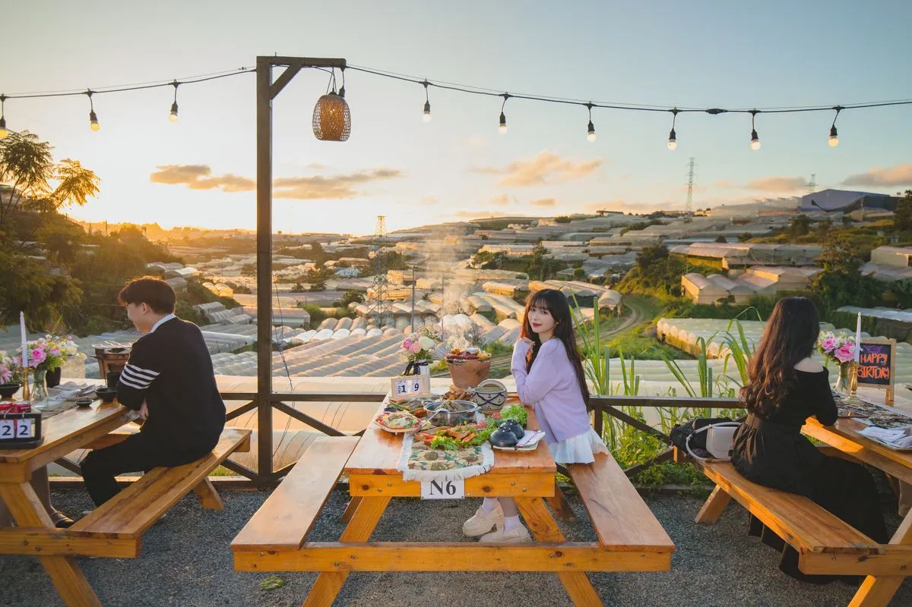

Xe lửa Đà Lạt — Di sản cổ kính
Tuyến đường sắt Đà Lạt - Trại Mát được xây dựng từ thời Pháp, dài 7km. Đoàn tàu chạy qua các cánh đồng hoa và nhà lồng, mang vẻ đẹp cổ điển giữa lòng phố núi. Đây là tuyến đường sắt răng cưa duy nhất còn hoạt động tại Việt Nam, thu hút hàng ngàn du khách mỗi năm đến trải nghiệm.
Tàu khởi hành nhiều chuyến trong ngày, nhưng chuyến chiều từ 15:30 - 17:00 là đẹp nhất vì ánh hoàng hôn phủ vàng cả thung lũng. Ngồi tại Trạm Dừng Chill, bạn có thể vừa nướng BBQ vừa ngắm đoàn tàu cổ kính từ từ đi qua ngay bên dưới — trải nghiệm độc đáo mà không nơi nào khác có được.
Tại sao nướng BBQ ngắm xe lửa lại đặc biệt?
Sự kết hợp giữa ẩm thực nướng ngoài trời và cảnh quan di sản tạo nên trải nghiệm đa giác quan: mùi thơm của thịt nướng, tiếng than hồng lách tách, tiếng còi tàu vang vọng giữa thung lũng và khung cảnh hoàng hôn rực rỡ. Đây là lý do nhiều food blogger và travel vlogger chọn Trạm Dừng Chill làm địa điểm review hàng đầu tại Đà Lạt.
Ngoài ra, không khí mát mẻ 18-22°C quanh năm của Đà Lạt khiến việc ngồi nướng ngoài trời trở nên thoải mái hơn bao giờ hết. Bạn không cần lo về nóng bức hay mồ hôi — chỉ cần tận hưởng bữa ăn và cảnh đẹp.
3 khoảnh khắc không thể bỏ lỡ
15:00 - 17:30: Hoàng hôn vàng phủ lên thung lũng, ánh nắng chiếu qua hàng ngàn nhà lồng tạo nên khung cảnh lộng lẫy. Đây là thời điểm vàng để chụp ảnh và check-in với bạn bè.

17:30 - 18:30: Xe lửa chạy qua, tiếng còi tàu vang lên giữa bữa nướng — khoảnh khắc check-in triệu like.

18:30 - 23:00: Nhà lồng đồng loạt lên đèn, tạo nên "biển sao" lung linh giữa đêm Đà Lạt.

Đặt bàn sớm để có chỗ đẹp
Quán thường đông vào chiều tối và cuối tuần. Đặt bàn trước để được chọn vị trí view hoàng hôn hoặc view xe lửa. Hotline: 0989.765.070